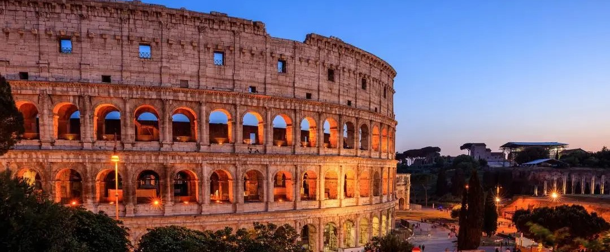

COLOSSEUM
Koloseum (bahasa Latin: Colosseum atau Colisseum;[1] bahasa Italia: Colosseo) adalah sebuah peninggalan bersejarah berupa arena gladiator, dibangun oleh Vespasian. Tempat pertunjukan yang besar berbentuk elips yang disebut amfiteater atau dengan nama aslinya Amphitheatrum Flavium, yang termasuk salah satu dari Enam Puluh Sembilan Keajaiban Dunia Pertengahan. Situs ini terletak di kota kecil di Italia, Roma, yang didirikan oleh Wali kota Vespasianus pada masa Domitianus dan diselesaikan oleh anaknya Titus,[2] dan menjadi salah satu karya terbesar dari arsitektur Kekaisaran Romawi yang pernah dibangun. Koloseum dirancang untuk menampung 50.000 orang penonton.
Konstruksi bangunan
Koloseum dibangun pada pemerintahan Vespasian pada tahun 72 M dan terselesaikan oleh anaknya Titus pada tahun 80 M. Colosseum didirikan berdekatan dengan sebuah istana megah yang sebelumnya dibangun Nero, yang bernama Domus Aurea[3] yang dibangun sesudah kebakaran besar di Roma pada tahun 64 M. Dio Cassius seorang ahli sejarah mengatakan bahwa ada sekitar 9000 hewan buas yang telah terbunuh di 100 hari sebagai perayaan peresmian dan pembukaan Colosseum tersebut. Lantai dari arena Colosseum tertutupi oleh pasir untuk mencegah agar darah-darah tidak mengalir ke mana-mana.
Pertunjukan
Di Koloseum pada saat itu adalah tempat penyelenggaraan sebuah pertunjukan yang spektakuler, yaitu sebuah pertarungan antara binatang (venetaiones), pertarungan antara tahanan dan binatang, eksekusi tahanan (noxii), pertarungan air (naumachiae) dengan cara membanjiri arena, dan pertarungan antara gladiator (munera). Selama ratusan tahun itu, diperkirakan ribuan orang maupun binatang mati di pertunjukkan Koloseum.
Sejarah penamaan
Nama dari Koloseum seperti pada di atas diambil dari nama sebuah patung setinggi 130 kaki atau 40 m, Colossus. Patung Colossus dibuat ulang sebagai pengganti Nero sebagai perumpamaan dari Sol dewa matahari, dengan menambahkan mahkota matahari. Di waktu pertengahan tahun, patung colossus telah menghilang. Seorang ahli mengatakan bahwa sejak patung itu terbuat dari tembaga, patung itu telah dileburkan untuk digunakan kembali. Selain diambil dari nama Koloseum, Koloseum juga disebut sebagai Flavian Amphitheatre yang tidak diketahui siapa yang memberi nama itu. Di Itali, Koloseum diberi nama il colosseo tetapi bahasa Roma lainnya menggunakan nama le colisée dan el coliseo untuk menyebutkan Colosseum.
Deskripsi
Koloseum berukuran cukup besar. Dengan tinggi 48 m, panjang 188 m, lebar 156 m dan luas seluruh bangunan sekitar 2.5 ha membuat Koloseum terlihat begitu besar dan luas. Arenanya terbuat dari kayu berukuran 86 m x 54 m, dan tertutup oleh pasir. Bentuk elips atau bulat dari Koloseum gunanya untuk mencegah para pemain untuk kabur ke arah sudut dan mencegah para penonton untuk berada lebih dekat dengan pertunjukan.
Koloseum merupakan hasil karya yang sangat hebat. Tempat itu dikatakan sebagai stadium yang hebat dan spektakuler dikarenakan oleh bentuk dan struktur dari Koloseum itu. Sampai sekarang pun, Koloseum masih dikatakan sebagai stadiom yang hebat dan spektakuler. Tempat duduk di Koloseum dibagi menjadi tingkatan-tingkatan yang berbeda berdasarkan status sosial dalam masyarakat Romawi.
Podium utama di yang terletak di bagian utara dan selatan untuk Kaisar dan keluarganya, pada tempat ini memberikan pemandangan yang terbaik dilihat dari arena, terdapat tempat istirahatnya, tempat penyimpanan harta juga berada di tingkat ini. Kemudian pada tingkat yang sama dengan platform yang lebih luas merupakan podium khusus untuk para senator Roman, yang boleh membawa kursi sendiri. Nama-nama beberapa senator masih dapat dilihat dari ukiran pada batu yang menjadi tempat duduknya.
Pada tingkat berikutnya disebut maenianum primum, yang dikhususkan untuk para bangsawan Roman. Selanjutnya pada tingkat ketiga adalah maenianum secundum yang dibagi-bagi lagi menjadi tiga bagian. Bagian paling bawah (immum) digunakan untuk para orang kaya, di bagian atasnya lagi (summum), digunakan untuk rakyat jelata. Dan yang terakhir, di bagian kayu (maenianum secundum in legneis) adalah tempat yang strukturnya dari kayu di paling atas bangunan. Tempat itu merupakan tempat untuk berdiri saja yang digunakan untuk para wanita rendahan.
Setelah 2 tahun Koloseum digunakan sebagai tempat pertunjukan, Anak termuda Vespasian yang bernama Domitian memerintahkan untuk mengkonstruksikan area bawah tanah (hypogeum), dua tingkat jalur bawah tanah yang saling berhubungan berupa terowongan dan kurungan dimana para gladiator dan binatang ditempatkan sebelum pertarungannya dimulai. Disana juga disediakan jebakan-jebakan berupa pintu jebakan yang digunakan untuk mencegah masuknya hewan-hewan buas yang tidak direncanakan ke arena dan untuk menjaga tempat penyimpanan senjata di dalam koloseum tersebut.